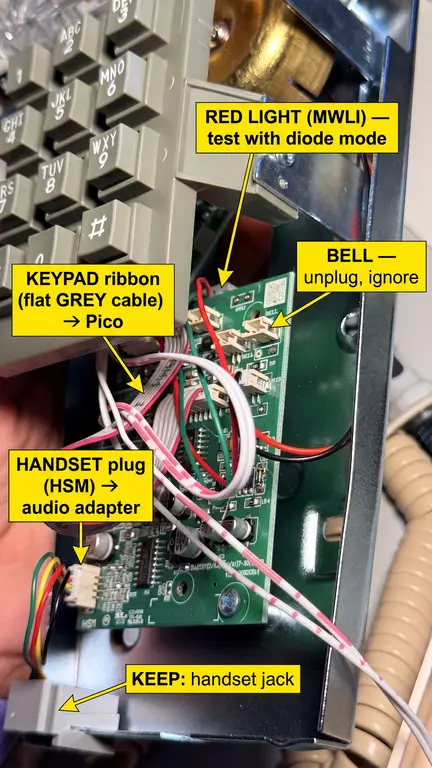
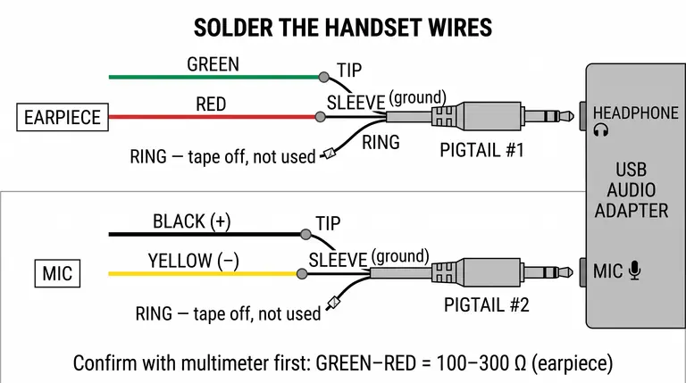

Booth Quick Build
The short version of the booth manual: one phone, one Pi, one screen, one printer, in nine steps. About 3 hours for the first booth and 1.5 hours for each one after. When something needs more explanation, the full manual has the why.

What you need for one booth
- Wall phone (HA9888 beige)
- CanaKit Raspberry Pi 5 Starter Kit PRO (Pi, power supply, case, memory card, cables)
- ARZOPA Z1FC 16.1" screen, plus a USB-C charger for it
- Micro-HDMI to mini-HDMI cable
- Raspberry Pi Pico
- Sabrent USB audio adapter and 2 × 3.5 mm pigtail cables
- Rongta 80 mm receipt printer and paper
- 26 AWG wire in several colours, heat-shrink, zip ties with adhesive mounts, 1" (25 mm) clear heat-shrink for the Pico
- Power strip
Tools: soldering iron set to 350 °C (660 °F), solder, multimeter, wire strippers, flush cutters, heat gun, small screwdriver, tape and a marker.
Open the phone
15 minutes
- Unscrew the metal back plate and lift the front shell away gently.
- Put a tape label on every cable: HANDSET, KEYPAD, HOOK, LIGHT, BELL, LINE.
- Take a photo. Then unplug everything from the green main board and take the board out.

Handset to audio adapter
20 minutes
Cut the plug off the 4 handset wires and solder each one to a pigtail. On each pigtail, tape off the third wire (the ring); it isn't used.
| Handset wire | Goes to |
|---|---|
| Green | Earpiece pigtail tip |
| Red | Earpiece pigtail sleeve |
| Black | Mic pigtail tip |
| Yellow | Mic pigtail sleeve |
Cover each joint with heat-shrink. Plug the earpiece pigtail into the Sabrent's 🎧 jack and the mic pigtail into 🎤.

Green to red reads about 230 Ω on the meter.
Hook switch to the Pico
15 minutes
- Find the hook switch's grey ribbon. Leave the hot-glued pads on its little board alone.
- Cut the ribbon about 2 cm (¾ in) before its plug. Peel off the first two wires on the side nearest the phone's left edge.
- Solder one to pin 20 (GP15) and the other to pin 18 (GND). Either way round works.
Those two wires beep on the meter only when the handset is lifted.
Keypad to the Pico
20 minutes
Unplug the keypad ribbon and number its wires from the red stripe (wire 1). Solder them to the Pico in order. Hold the Pico with its USB port at the top: pin 1 is top left, counting down the left side.
| Ribbon wire | 1 | 2 | 3 | 4 | 5 | 6 | 7 |
|---|---|---|---|---|---|---|---|
| Pico pin | 1 | 2 | 4 | 5 | 6 | 7 | 9 |
| Name | GP0 | GP1 | GP2 | GP3 | GP4 | GP5 | GP6 |
Pins are only 2.54 mm (0.1 in) apart. After each joint, touch the meter to the neighbouring pins: they must not beep together.
Load the Pico
10 minutes
- Hold the white BOOTSEL button, plug the Pico into a laptop, then let go. A drive called RPI-RP2 appears.
- From circuitpython.org, download CircuitPython for Pico (or Pico W if that's the board you have) and drag the
.uf2file onto RPI-RP2. It comes back as CIRCUITPY. - Copy everything in
booth/pico/onto CIRCUITPY:code.py,keymonitor.py,keyfinder.pyand thelibfolder.
Lift the handset: the Pico's small LED lights. Open a text editor and press each key: it types its digit. The settings already match the HA9888 phone. A different phone model needs its keypad mapped first (full manual, Part 10c).
Close up the phone
15 minutes
- Slide the Pico into the clear 1" heat-shrink with the USB end open, and shrink it with the heat gun on low. This stops it shorting on the metal back plate.
- Stick the Pico and the Sabrent inside with adhesive mounts, away from the metal. Add a screw through each mount where the plastic allows.
- Zip-tie the wires next to the Pico, so a tug pulls on the ties and never on a solder joint.
- Run both USB cables out through the old LINE jack hole, anchor them inside with a zip tie, and close the phone.
Set up the Pi
30 minutes, mostly waiting
- Assemble the CanaKit: heatsink on the chip, fan plugged into the socket marked FAN, case closed.
- Plug in the screen (micro-HDMI to mini-HDMI), a keyboard and Ethernet. Plug in power last.
- When the desktop appears, open Terminal and type these lines, pressing Enter after each:
git clone -b claude/landline-demo-booth-setup-05lxch https://github.com/lizzieoh/hello-world.git
cd hello-world/booth/native
./setup-native.sh 1
sudo rebootThe 1 is the booth number: use 2, 3 or 4 on the other Pis. Paste the fal key when it asks (the letters don't show; that's normal). The self-test at the end should say every test passed.
Connect everything
10 minutes
| From | Plug into |
|---|---|
| Phone: Sabrent USB cable | Pi USB port |
| Phone: Pico USB cable | Pi USB port |
| Printer USB cable | Pi USB port |
| Screen power | Its own USB-C charger, never the Pi |
| Pi, screen and printer chargers | Power strip |
Test call
15 minutes
- Lift the handset: you hear a ring, a click, the greeting, then a beep
- Say a prompt: "please hold" and music play, then the video appears, muted
- Press 2: sound on. Press 3: a new take. Press 0: the receipt prints and cuts.
- Hang up: the screen loops recent videos
- Unplug the screen's power and plug it back in: it switches itself back on
- Pull the Ethernet while on hold: you hear a busy signal. Plug it back in: the next call works.
- 20 calls in a row with no problems: this booth is done
Quick fixes
| Problem | Fix |
|---|---|
| Something's stuck | Hold * for 3 seconds. The app restarts in a few seconds. |
| Time to power off | Hold # for 5 seconds, wait for the Pi's green light to stop blinking, then unplug. |
| Red dot on the screen | The network is down. Check the router. |
| "Printer offline" | Replug the printer's USB cable, then press 0 again. |
| A booth is dead | Swap in the spare. Any booth's memory card works in any Pi. |